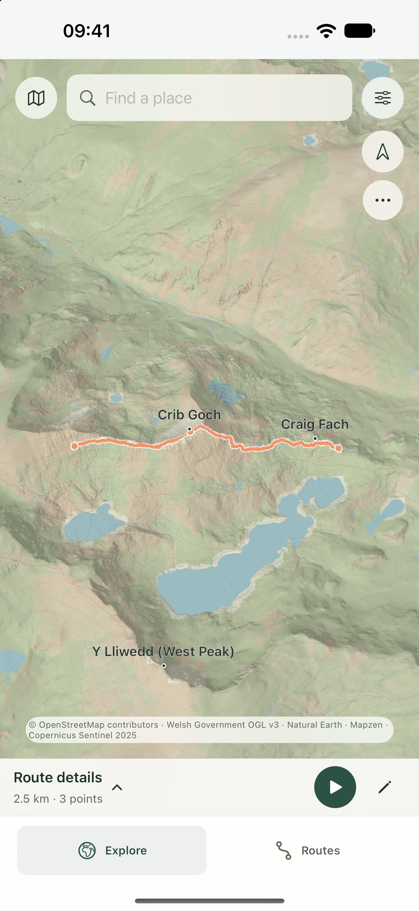
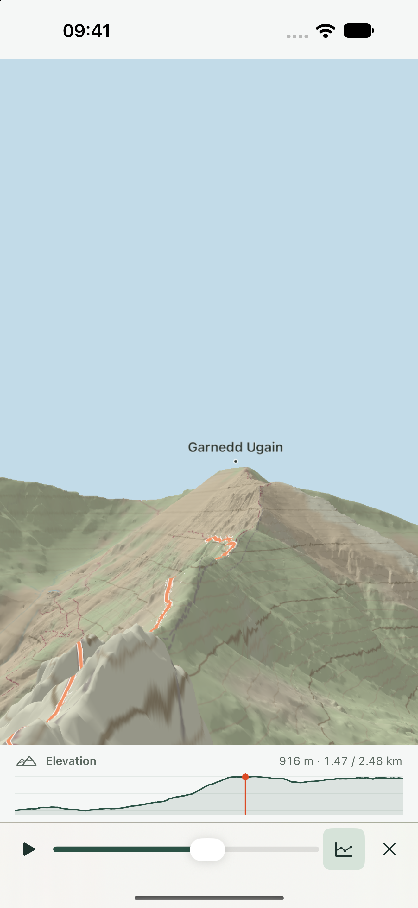
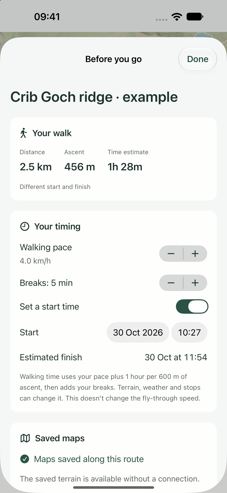
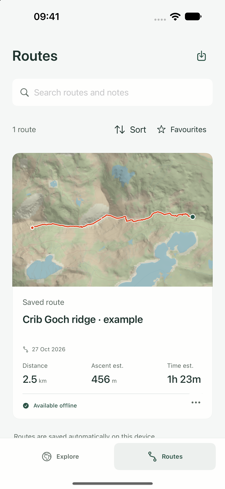
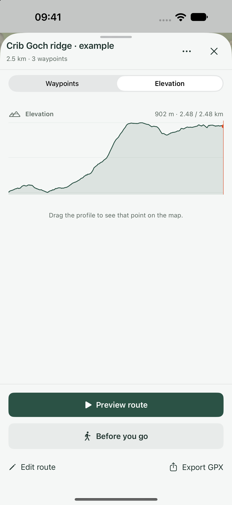
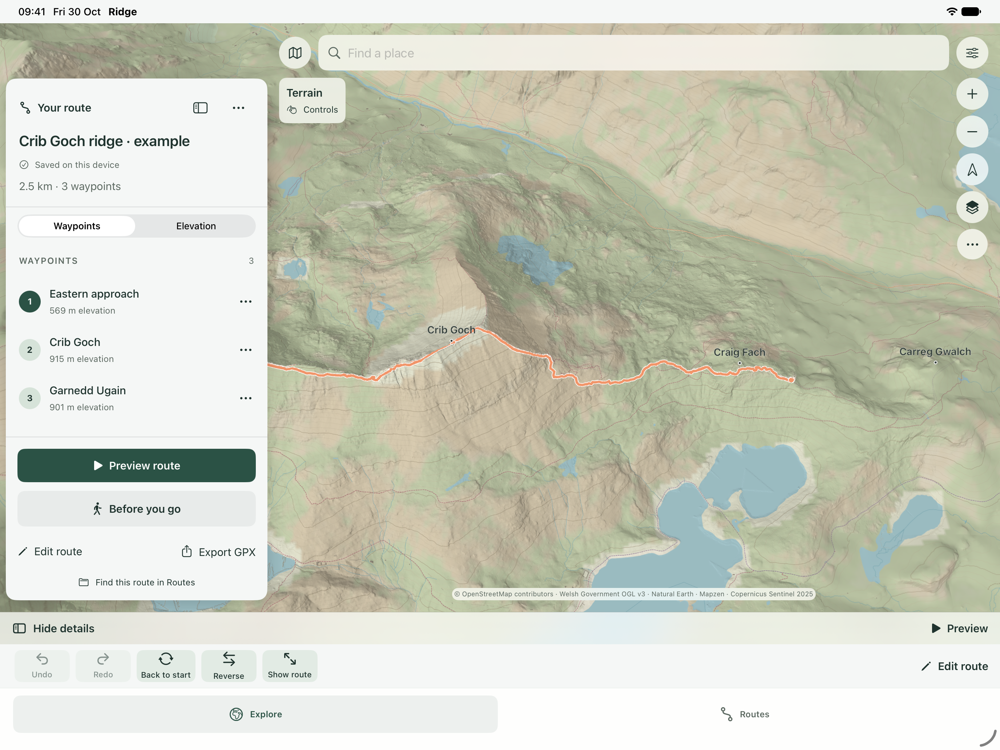
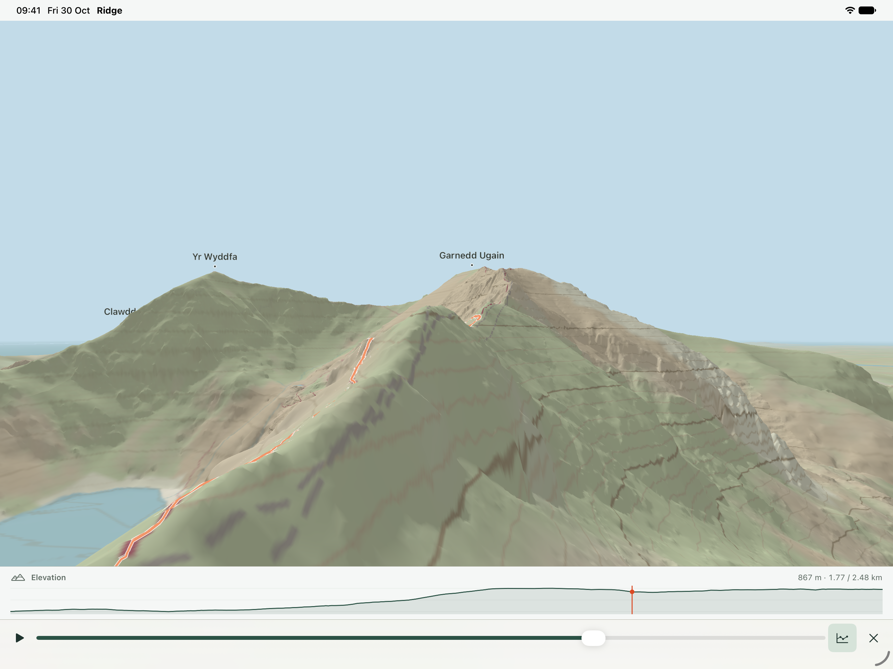
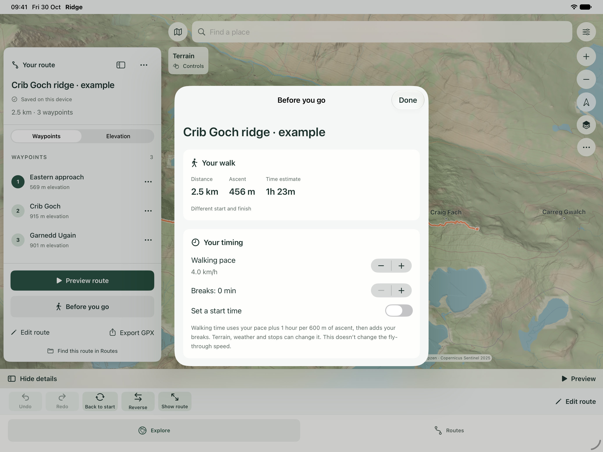

Plan, explore & preview in 3D
Free during early access. Plan your next walk on detailed 3D terrain, save maps for offline use and fly through your route before you set out.








Get a feel for the walk before you go. Ridge brings your route onto 3D terrain, so you can see the climbs, follow a ridgeline and explore what lies ahead.
EXPLORE THE SHAPE OF THE LAND
Browse the included UK overview, then download an area for detailed terrain and offline route planning. Zoom from the overhead map into 3D and move around the landscape on iPhone or iPad. Available terrain and its level of detail vary by area.
PLAN YOUR OWN ROUTE
Add and edit waypoints, follow mapped walking paths or sketch a direct line. Inspect the elevation profile, distance, ascent and descent. Undo changes, reverse a route or add a return to the start. Your routes save locally in your library.
FLY THROUGH THE JOURNEY
Preview your route with a forward-moving, banked flight over the terrain. Pause or scrub through the journey and see where you are on its elevation profile. Download the terrain first; the preview uses saved map data.
GET READY TO GO
Open Before you go to set a walking pace, add breaks and estimate your finish time. Review the route's legs, check saved-map coverage and keep a packing checklist and route notes. Time and elevation figures are planning estimates, with gaps shown where data is incomplete.
BRING YOUR GPX FILES
Import a GPX route or track from Files, keep its separate sections and export routes through the system share sheet. Search, sort and favourite your saved routes.
MADE FOR OFFLINE PLANNING
The UK overview and a Snowdon demonstration are included. An internet connection and free device storage are needed for additional map downloads. Save the area you need before leaving, then reopen it offline. No Ridge account is required, and there are no ads or behavioural analytics.
FREE DURING EARLY ACCESS
The current features are free during early access. Pricing may change in future versions. Feedback is welcome and optional.
Ridge is a route-planning and terrain-preview tool. It does not provide live turn-by-turn navigation. Mapped paths do not establish access rights or current ground conditions; check your route, weather and equipment before setting out.